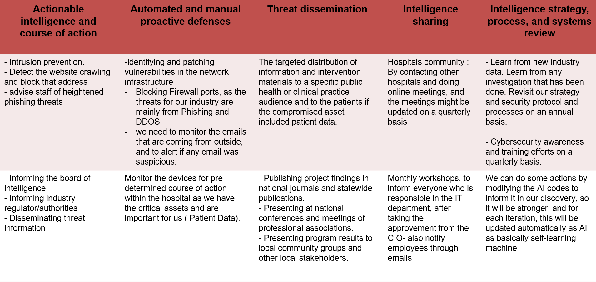

This section discusses Operational Intelligence and Future Directions for the AI4Cyber
platform
Operational Intelligence

Future Directions for the AI4Cyber platform
Increasing the efficiency of human security analysts
47% of security analysts have trouble prioritizing security alerts due to large volume of alerts
Turnover rate among security analysts is between 10% – 25%
Increasing the use of AI to analyze incoming data, assess the scope of each threat, determine response
and remediation actions and escalate to humans when needed will reduce the volume of security alerts
This will allow analysts to work on complex security issues and focus on proactively monitoring threats
and vulnerabilities leading to better efficiency and reduced turnover
Proactive Security Posture
Currently, IT assets need to be configured, monitored for compliance and vulnerabilities by humans
manually or
using vendor provided tools. This can increase the load on security teams and lead to misconfiguration or
configuration that is not updated in response to the latest threats.
Usage of AI and ML to automate areas such as applying security policy configuration, threat and
vulnerability
detection and compliance monitoring can reduce this risk
Rich user behavior analytics combined with unsupervised learning algorithms can automatically examine
user
activities, network and data access patterns and determine if a response is warranted will enable a more
proactive security posture and increase cyber resilience.
Accelerated Threat Detection
Increasing numbers of network connected assets create a security challenge.
AI-driven network and asset mapping and visualization capabilities can provide a real-time understanding
of an
organizations’ attack surface. They can identify and categorize active assets to provide visibility into
rogue
assets